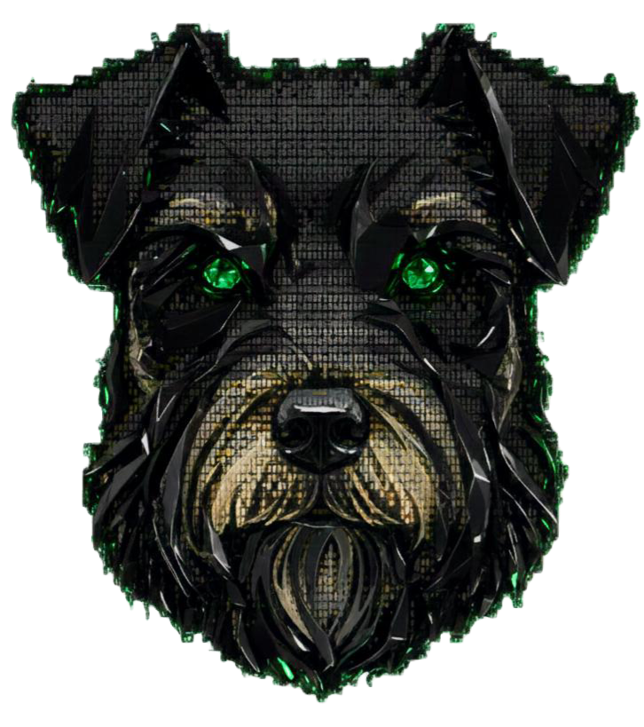
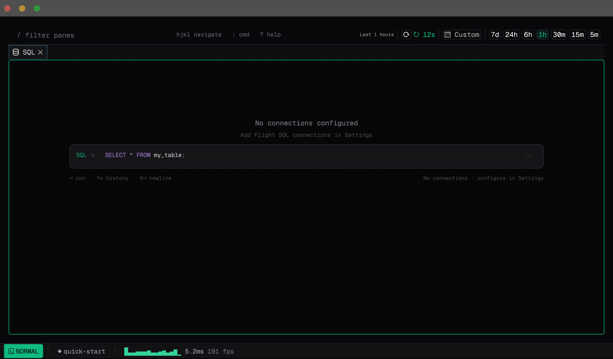
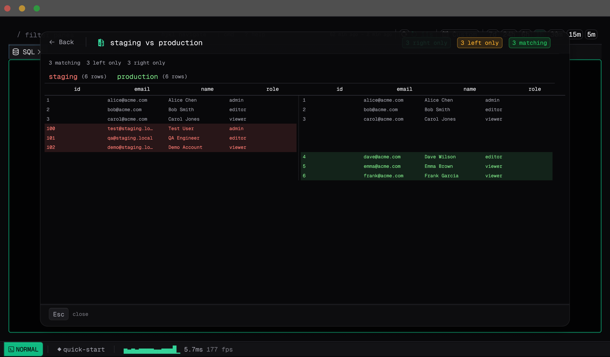
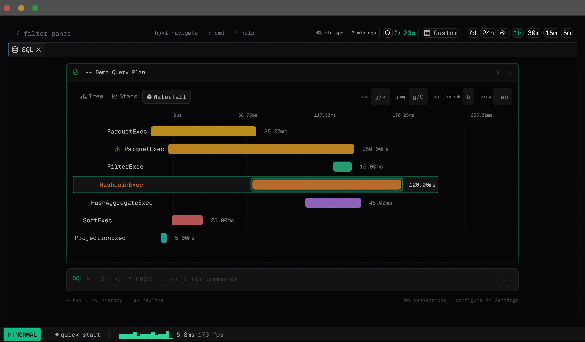

Apache DataFusion Stockholm Meetup · March 2026

Observability for Builders
A shared interface for humans and AI agents
enya.build · github.com/meldrumlabs/enya · MIT License
PhD Student @ Data Systems Lab, KTH — Streaming systems and data management
Created μWheel, a Tiny Embeddable Aggregate Management System for Streams and Queries.
Software Engineer @ Massive — Building real-time data systems for financial markets using DataFusion
Meldrum Labs — Building with Massive + building Enya
currentThis is what you see for a few hours.
But this is what you see most of the time.
So you end up staying inside to build!
Neovim meets Grafana, reimagined for human and agent collaboration.
Follow along: enya.build/editor
Tree-sitter + Tantivy index your codebase to connect telemetry back to source code.
02
Towards first-class DataFusion integration

/tables, /schema — explore structure/explain, /analyze — query plans/diff — compare across environments/bench — benchmark queries
staging vs production

Claude Code & Codex connect via JSON-RPC (ACP). Agents output structured commands, the editor executes them.
Capture and share a workspace via URL — no data source access needed.
A tool for those who build, ship, and get paged.
Where DataFusion will be a first-class integration.
Get in touch if there are any SQL / DataFusion capabilities you would love to see!
Follow the interactive tutorial in your browser
github.com/meldrumlabs/enya
No install required — runs in the browser via WASM (SQL not yet available in web version)